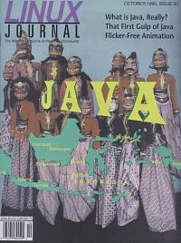

Shutdown Archive web server
Search:
Linux Journal
Issue #30/October 1996

Features
What is Java, Really?
by Rudi Cilibrasi
Let's Skip the hype. This article explains what Java is and points you to the right places if you want to dive in.
Flicker-free Animation Using Java
by Paul Buchheit
Currently the most popular use of Java seems to be in building applets. This article shows you not only how to make an applet, but how to make it look good.
That First Gulp of Java
by Brian Christeson and John D. Mitchell
A relatively new technology, Java has experienced phenomenal growth. Why? Read on.
News and Articles
My Next Pentium Is A DEC Alpha
by Bryan W. Headley
Is a DEC Alpha a solution if you want a really fast Linux system? Here is one person's experience that may help you decide.
DEC AXP Review
by Bryan Phillippe
Faster than a speeding bullet, able to leap tall buildings ... it's Digital's AXP (aka Alpha) computer.
Columns
Letters to the Editor
From the Publisher
The Politics of Freedom
New Column
Linux Means Business
Stop the Presses
Kernel Korner
Network Buffers and Memory Management
Linux Means Business
Using Sendmail as a Multi-Platform Mail Router
Product Review
The Java Reference Package from SSC
Take Command
apropos
New Products
Directories & References
Consultants Directory
Linux Buyer's Guide Announcement
Archive Index
Shutdown Archive web server
Search:
Copyright © 1994 - 2018
Linux Journal
. All rights reserved.